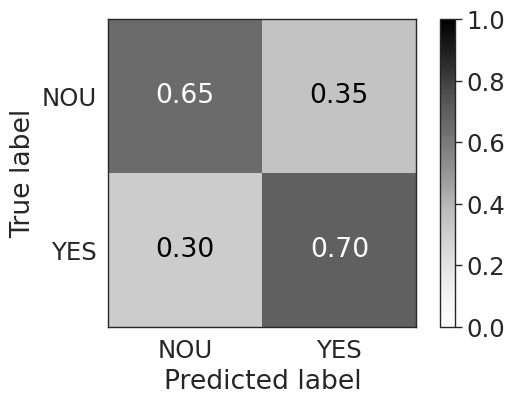
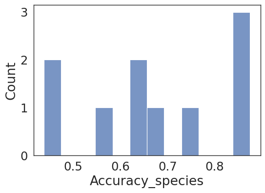

#Importing key modules
import numpy as np # for mathematical computation
import pandas as pd # for mathematical computation
from sklearn.model_selection import KFold
from sklearn.model_selection import train_test_split
from sklearn.model_selection import RandomizedSearchCV
import joblib
from sklearn.model_selection import train_test_split
from sklearn.metrics import ConfusionMatrixDisplay
from sklearn.svm import SVC
from sklearn.metrics import(
accuracy_score,
classification_report,
confusion_matrix,
precision_recall_fscore_support
)
from time import time
%matplotlib inline
import matplotlib.pyplot as plt # for plotting
import seaborn as sns # for plotting
sns.set(
context = "paper",
style = "white",
palette = "deep",
font_scale = 2.0,
color_codes = True,
rc = ({"font.family": "Dejavu Sans"})
)
%matplotlib inline
plt.rcParams["figure.figsize"] = [6,4]Expanded nested cross validation
1 Expanded nested cross validation
In [1]:
In [16]:
# define functions
def ml_loop(
X_train,
y_train_species,
kf,
num_rounds: int,
random_grid: dict,
scoring: str,
species_model,
name
):
"""
Perform a machine learning loop with cross-validation and randomized grid search.
This function performs a machine learning loop that includes cross-validation,
randomized grid search for hyperparameter tuning, and model evaluation. It
trains and evaluates the model multiple times (specified by num_rounds) and
collects the results.
Parameters
----------
X_train : array-like of shape (n_samples, n_features)
The training input samples.
y_train_species : array-like of shape (n_samples,)
The true labels for the training samples.
kf : cross-validation generator
A cross-validation generator, such as KFold or StratifiedKFold.
num_rounds : int
The number of rounds to run the loop.
random_grid : dict
The hyperparameter grid for randomized search.
scoring : str
The scoring metric to evaluate the model, e.g., 'accuracy'.
species_model : estimator object
The machine learning model to be used, e.g., an instance of SVC.
Returns
-------
species_predicted : list
A list of predicted labels for the test samples across all rounds.
species_true : list
A list of true labels for the test samples across all rounds.
kf_results : pd.DataFrame
A DataFrame containing the model parameters and global accuracy scores.
kf_per_class_results : list
A list of per-class accuracy scores for
"""
start = time()
kf_results = pd.DataFrame() # model parameters and global accuracy score
kf_per_class_results = []
species_predicted, species_true = [], []
for vuelta in range(num_rounds):
print(f"\nThis is round {vuelta+1}...\n")
SEED = np.random.randint(0, 81478)
# Before your cross-validation loop
# y_species_train = np.where(y_species_train == 'AA', 0, 1)
# Inside your cross-validation loop, this step is not needed as the data is already encoded
# cross validation and splitting of the validation set
for train_index, test_index in kf.split(X_train, y_train_species):
X_train_set, X_test_set = X_train[train_index], X_train[test_index]
y_train_species_set, y_val_species_set = (
y_train_species[train_index],
y_train_species[test_index],
)
# print('The shape of X train set : {}'.format(X_train_set.shape))
# print('The shape of y train species : {}'.format(y_train_species_set.shape))
# print('The shape of X test set : {}'.format(X_test_set.shape))
# print('The shape of y test species : {}\n'.format(y_val_species_set.shape))
# generate models using all combinations of settings
# RANDOMSED GRID SEARCH
# Random search of parameters, using 5 fold cross validation,
# search across 100 different combinations, and use all available cores
n_iter_search = 10
rsCV = RandomizedSearchCV(
verbose=1,
estimator=species_model,
param_distributions=random_grid,
n_iter=n_iter_search,
scoring=scoring,
cv=kf,
refit=True,
n_jobs=-1,
)
rsCV_result = rsCV.fit(X_train_set, y_train_species_set)
# print out results and give hyperparameter settings for best one
means = rsCV_result.cv_results_["mean_test_score"]
stds = rsCV_result.cv_results_["std_test_score"]
params = rsCV_result.cv_results_["params"]
# for mean, stdev, param in zip(means, stds, params):
# print("Accuracy of %.2f $\pm$(%.2f) with: %r" % (mean, stdev, param))
# print best parameter settings
print(
"Best accuracy: %.2f using %s"
% (rsCV_result.best_score_, rsCV_result.best_params_)
)
# Insert the best parameters identified by randomized grid search into the base classifier
species_classifier = species_model.set_params(**rsCV_result.best_params_)
# Fit your models
species_classifier.fit(X_train_set, y_train_species_set)
# predict test instances
sp_predictions = species_classifier.predict(X_test_set)
# zip all predictions for plotting averaged confusion matrix
# species
for predicted_sp, true_sp in zip(sp_predictions, y_val_species_set):
species_predicted.append(predicted_sp)
species_true.append(true_sp)
# species local confusion matrix & classification report
local_cm_species = confusion_matrix(y_val_species_set, sp_predictions)
local_report_species = classification_report(
y_val_species_set, sp_predictions
)
# append feauture importances
# local_feat_impces_species = pd.DataFrame(species_classifier.feature_importances_,
# index = features.columns).sort_values(by = 0, ascending = False)
# summarizing results
local_kf_results = pd.DataFrame(
[
(
"Accuracy_species",
accuracy_score(y_val_species_set, sp_predictions),
),
("TRAIN", str(train_index)),
("TEST", str(test_index)),
("CM", local_cm_species),
("Classification report", local_report_species),
("y_test", y_val_species_set),
# ("Feature importances", #local_feat_impces_species.to_dict())
]
).T
local_kf_results.columns = local_kf_results.iloc[0]
local_kf_results = local_kf_results[1:]
kf_results = pd.concat(
[kf_results, local_kf_results], axis=0, join="outer"
).reset_index(drop=True)
# per class accuracy
local_support = precision_recall_fscore_support(
y_val_species_set, sp_predictions
)[3]
local_acc = np.diag(local_cm_species) / local_support
kf_per_class_results.append(local_acc)
elapsed = time() - start
print(f"\nTime elapsed: {elapsed:.2f} seconds")
filename = "./results/models/trained_model_" + name + ".sav"
joblib.dump(species_classifier, filename)
return species_true, species_predicted, kf_results
def confusion_matrix_mau(y_pred, y_true, xticks_rotation=None, ax=None):
"""
Displays a normalized confusion matrix using the true and predicted labels.
This function generates and displays a normalized confusion matrix using the
true labels (`y_true`) and the predicted labels (`y_pred`). The confusion
matrix is displayed using a grayscale colormap and is normalized to show
proportions instead of raw counts.
Args:
y_pred (array-like of shape (n_samples,)): The predicted labels.
y_true (array-like of shape (n_samples,)): The true labels.
ax (matplotlib.axes.Axes, optional): The axes on which to plot the confusion matrix.
If None, the current axes will be used.
Returns:
None
"""
ConfusionMatrixDisplay.from_predictions(y_pred=y_pred, y_true=y_true,normalize='true', values_format='.2f', cmap=plt.cm.Greys, ax=ax, im_kw={'vmin':0, 'vmax':1}, xticks_rotation=xticks_rotation)In [6]:
# Loading data
df=pd.read_csv("./data/UV_pilot.csv")
train_set, test_set = train_test_split(
df,
stratify = df["Exposed"],
test_size = 0.2,
shuffle = True,
random_state = 42
)In [9]:
train_set| Specie | Sex | Exposed | Reeplicate | ID | 4006 | 4004 | 4002 | 4000 | 3998 | ... | 415 | 413 | 411 | 409 | 407 | 405 | 403 | 401 | 399 | 397 | |
|---|---|---|---|---|---|---|---|---|---|---|---|---|---|---|---|---|---|---|---|---|---|
| 38 | AG | F | NOU | R1 | 0 | 0.00606 | 0.00633 | 0.00645 | 0.00641 | 0.00630 | ... | 0.27204 | 0.27022 | 0.27061 | 0.27248 | 0.27390 | 0.27571 | 0.27762 | 0.27621 | 0.27455 | 0 |
| 93 | AG | F | YES | R1 | 4 | 0.00721 | 0.00707 | 0.00694 | 0.00675 | 0.00670 | ... | 0.32102 | 0.32095 | 0.31825 | 0.31510 | 0.31353 | 0.31366 | 0.31579 | 0.32116 | 0.32686 | 0 |
| 0 | AG | F | YES | R1 | 2 | 0.00477 | 0.00462 | 0.00448 | 0.00434 | 0.00439 | ... | 0.33421 | 0.33535 | 0.33473 | 0.33308 | 0.33221 | 0.33094 | 0.33106 | 0.33498 | 0.34019 | 0 |
| 25 | AG | F | YES | R1 | 2 | 0.00385 | 0.00373 | 0.00366 | 0.00357 | 0.00377 | ... | 0.31823 | 0.31901 | 0.31912 | 0.31971 | 0.32106 | 0.31962 | 0.31680 | 0.31756 | 0.32199 | 0 |
| 64 | AG | F | YES | R1 | 1 | 0.00494 | 0.00477 | 0.00468 | 0.00460 | 0.00468 | ... | 0.30981 | 0.31129 | 0.31186 | 0.31023 | 0.30699 | 0.30595 | 0.30871 | 0.31130 | 0.31167 | 0 |
| ... | ... | ... | ... | ... | ... | ... | ... | ... | ... | ... | ... | ... | ... | ... | ... | ... | ... | ... | ... | ... | ... |
| 42 | AG | F | NOU | R1 | 4 | 0.00679 | 0.00693 | 0.00694 | 0.00687 | 0.00679 | ... | 0.25786 | 0.25613 | 0.25454 | 0.25483 | 0.25630 | 0.25775 | 0.25947 | 0.26051 | 0.26139 | 0 |
| 4 | AG | F | NOU | R1 | 3 | 0.00543 | 0.00552 | 0.00556 | 0.00555 | 0.00548 | ... | 0.29425 | 0.29175 | 0.29122 | 0.29344 | 0.29576 | 0.29720 | 0.29858 | 0.29935 | 0.29861 | 0 |
| 74 | AG | F | YES | R1 | 1 | 0.00544 | 0.00526 | 0.00516 | 0.00510 | 0.00521 | ... | 0.32188 | 0.32248 | 0.32371 | 0.32439 | 0.32371 | 0.32147 | 0.32081 | 0.32315 | 0.32414 | 0 |
| 5 | AG | F | NOU | R1 | 3 | 0.00497 | 0.00493 | 0.00494 | 0.00495 | 0.00490 | ... | 0.30796 | 0.30560 | 0.30474 | 0.30560 | 0.30651 | 0.30626 | 0.30575 | 0.30735 | 0.31038 | 0 |
| 56 | AG | F | NOU | R1 | 8 | 0.00583 | 0.00582 | 0.00589 | 0.00582 | 0.00576 | ... | 0.33333 | 0.33348 | 0.33379 | 0.33498 | 0.33634 | 0.33676 | 0.33716 | 0.33721 | 0.33624 | 0 |
80 rows × 1759 columns
In [10]:
X_train = np.asarray(train_set.iloc[:,5:-1]) # feature matrix
y_train_exposure = np.asarray(train_set['Exposed'])
X_test = np.asarray(test_set.iloc[:,5:-1])
y_test_species = np.asarray(test_set['Exposed'])In [12]:
# Set validation procedure
num_folds = 5 # split training set into 5 parts for validation
num_rounds = 2 # increase this to 5 or 10 once code is bug-free
seed = 42 # pick any integer. This ensures reproducibility of the tests
random_seed = np.random.randint(0, 81478)
scoring = 'accuracy' # score model accuracy
# cross validation strategy
kf = KFold(
n_splits = num_folds,
shuffle = True,
random_state = random_seed
)In [24]:
# this hypertuning is for SVC, if you want to try another model, this needs to be changed
random_grid = {'C': [10, 1.0, 0.1, 0.01], 'kernel': ["linear", 'rbf', 'poly'], 'gamma': [0.1, 1, 10]}
exposure_model = SVC()In [28]:
# Species prediction
y_mau_true, y_mau_predicted, main_results = ml_loop(X_train, y_train_exposure, kf, num_rounds=num_rounds, random_grid=random_grid, scoring='accuracy', species_model=exposure_model, name="mau_mau" )
This is round 1...
Fitting 5 folds for each of 10 candidates, totalling 50 fits
Best accuracy: 0.78 using {'kernel': 'poly', 'gamma': 10, 'C': 10}
Fitting 5 folds for each of 10 candidates, totalling 50 fits
Best accuracy: 0.75 using {'kernel': 'poly', 'gamma': 10, 'C': 1.0}
Fitting 5 folds for each of 10 candidates, totalling 50 fits
Best accuracy: 0.86 using {'kernel': 'poly', 'gamma': 1, 'C': 10}
Fitting 5 folds for each of 10 candidates, totalling 50 fits
Best accuracy: 0.77 using {'kernel': 'poly', 'gamma': 10, 'C': 0.1}
Fitting 5 folds for each of 10 candidates, totalling 50 fits
Best accuracy: 0.74 using {'kernel': 'poly', 'gamma': 1, 'C': 1.0}
This is round 2...
Fitting 5 folds for each of 10 candidates, totalling 50 fits
Best accuracy: 0.78 using {'kernel': 'poly', 'gamma': 10, 'C': 1.0}
Fitting 5 folds for each of 10 candidates, totalling 50 fits
Best accuracy: 0.75 using {'kernel': 'poly', 'gamma': 1, 'C': 10}
Fitting 5 folds for each of 10 candidates, totalling 50 fits
Best accuracy: 0.86 using {'kernel': 'poly', 'gamma': 10, 'C': 0.01}
Fitting 5 folds for each of 10 candidates, totalling 50 fits
Best accuracy: 0.77 using {'kernel': 'poly', 'gamma': 10, 'C': 10}
Fitting 5 folds for each of 10 candidates, totalling 50 fits
Best accuracy: 0.74 using {'kernel': 'poly', 'gamma': 1, 'C': 1.0}
Time elapsed: 3.40 secondsIn [18]:
# this function make pretty confusion matrices
confusion_matrix_mau(y_true=y_mau_true, y_pred=y_mau_predicted)
In [20]:
loaded_model_exposure = joblib.load('./results/models/trained_model_mau_mau.sav')In [30]:
y_hd_pred = loaded_model_exposure.predict(X_test)
acc = accuracy_score(y_true=y_test_species, y_pred=y_hd_pred)
print(f"Accuracy on test set using the head: {acc}")
confusion_matrix_mau(y_true=y_test_species, y_pred=y_hd_pred)Accuracy on test set using the head: 0.65
In [23]:
sns.histplot(data=main_results, x='Accuracy_species',bins=12)<Axes: xlabel='Accuracy_species', ylabel='Count'>